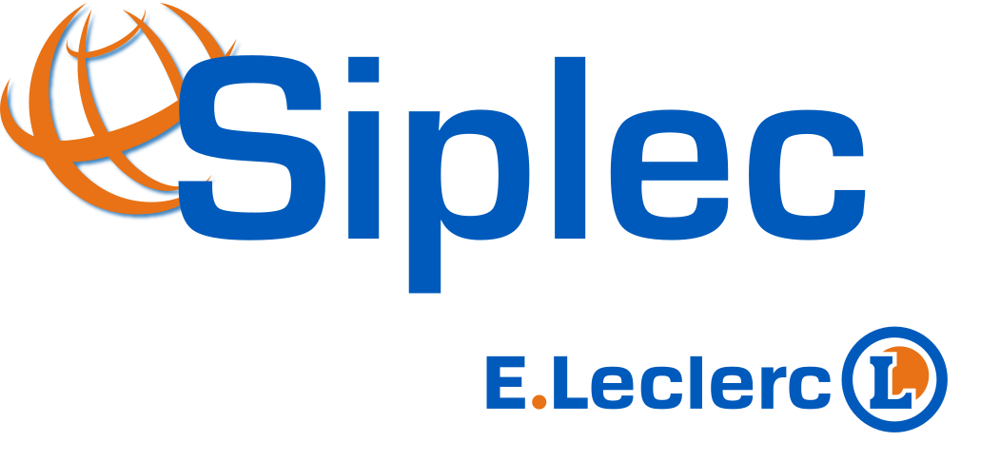
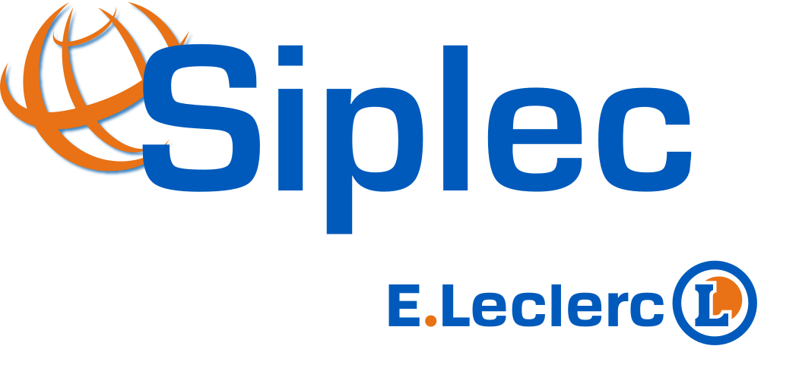

Stratégie & gouvernance
Aligner IT & enjeux métiers
Gouvernance du SI, schémas directeurs, pilotage de projets complexes. Assistance à maîtrise d'ouvrage, plans de continuité (PCA/PRA) et accompagnement Data Science & IA.
Nous accompagnons les DSI, directions métiers et équipes projets dans la conception, la sécurisation et la transformation de leurs systèmes d’information : de la stratégie aux opérations.
 

Notre positionnement : un conseil opérationnel, proche des équipes, qui s'inscrit dans la durée et s'adapte à la réalité de votre organisation.
Gouvernance du SI, schémas directeurs, pilotage de projets complexes. Assistance à maîtrise d'ouvrage, plans de continuité (PCA/PRA) et accompagnement Data Science & IA.
Urbanisation du SI, architecture applicative et technique. Direction technique (CTO), programmes cyber réglementaires (LPM, DORA, NIS), analyse des risques et assistance à maîtrise d'œuvre.
Modernisation des infrastructures, Green IT et gestion des obsolescences. Formation (ITIL, CMMI, Agile, DevOps), structuration des équipes et accompagnement au changement.
Chez xSOM Consulting, nous privilégions une approche pragmatique et collaborative, adaptée aux réalités de votre organisation.
Interventions menées aux côtés de vos équipes, en mode collaboratif.
Prise en compte des contraintes opérationnelles et budgétaires dès le cadrage.
Communication claire sur les enjeux, les risques et les arbitrages à prendre.
Documents clairs, exploitables et réutilisables par vos équipes.
Vous êtes consultant(e) expérimenté(e) en SI et souhaitez rejoindre une équipe à taille humaine, orientée expertise et accompagnement durable ? Découvrez nos opportunités.
Voir nos offres